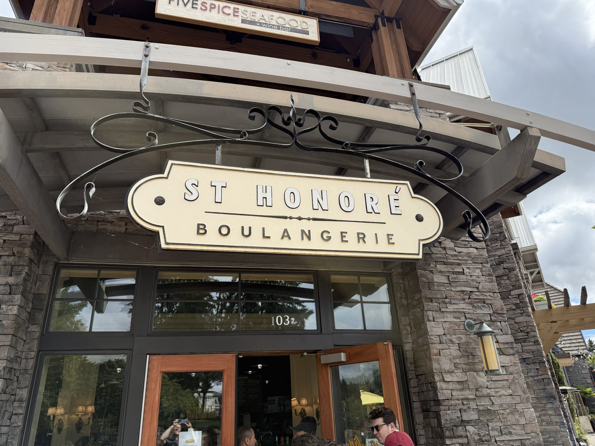
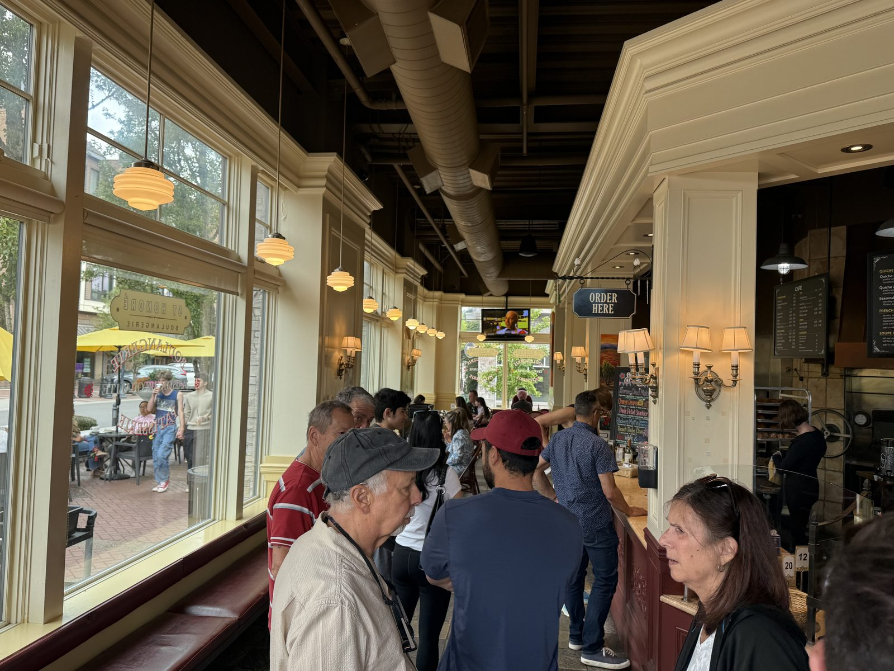
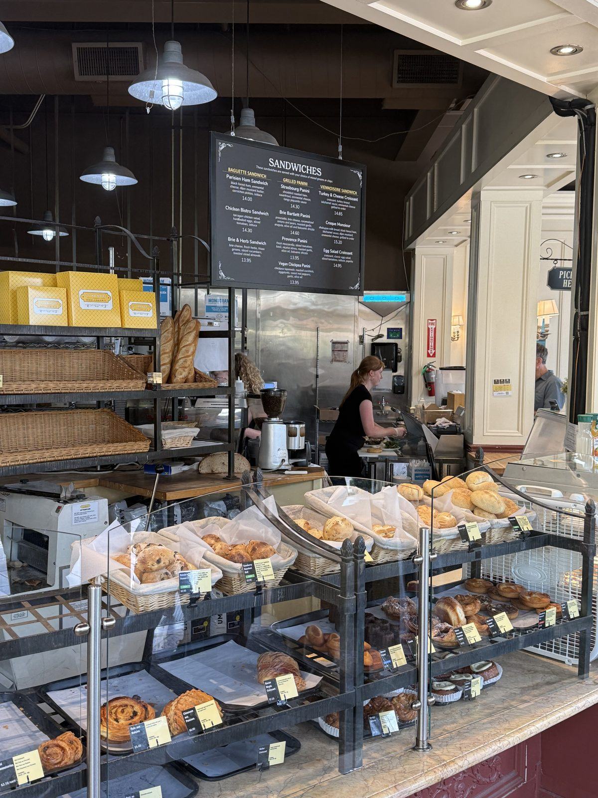
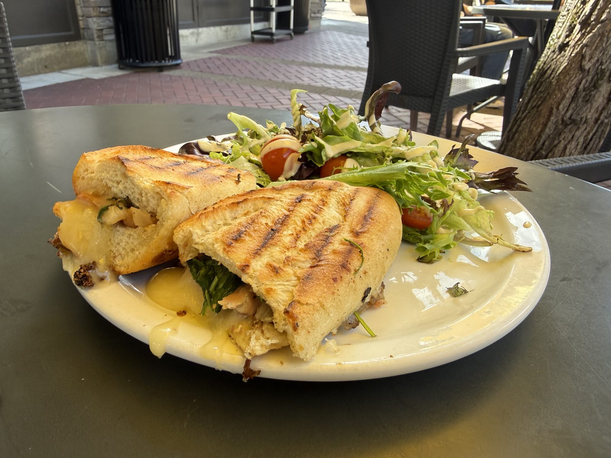
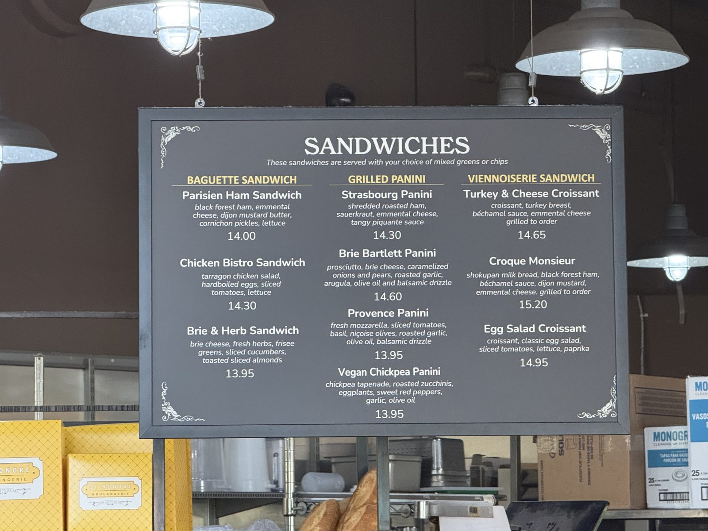
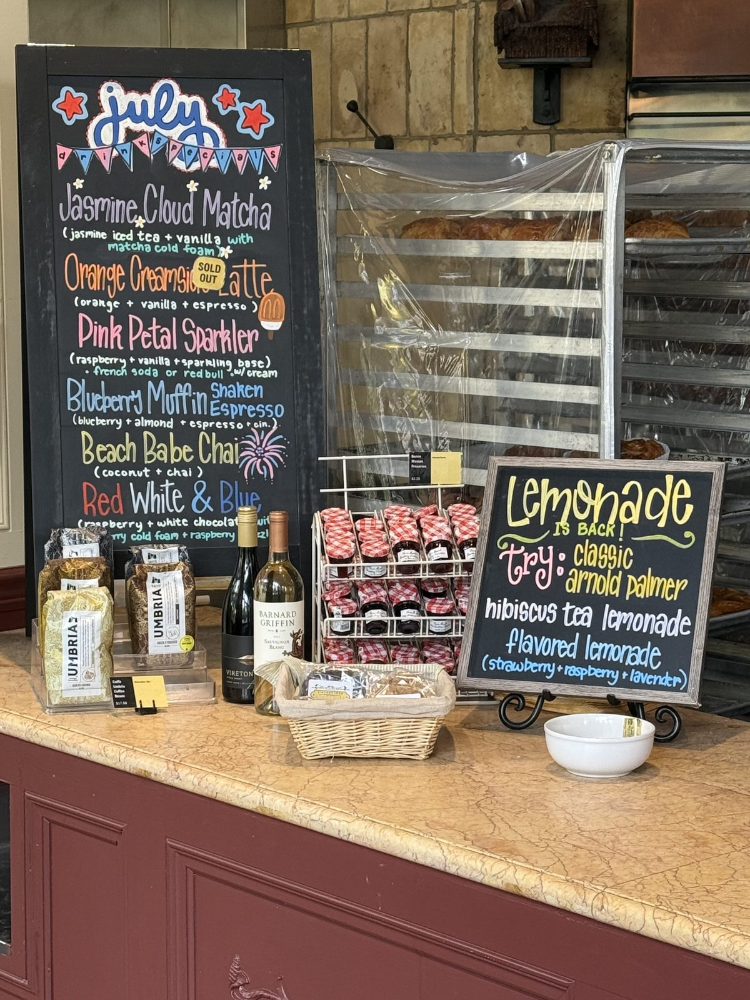

The Prosciutto and Brie Panini at St Honoré Boulangerie

Second stop, a little after eleven, after the egg coffee across town at Trung Nguyên Legend, and the patio out front of St Honoré Boulangerie was already doing the thing a good French bakery's patio is supposed to do on a Sunday late morning: every yellow umbrella occupied, somebody's dog under a chair, a low hum of conversation that hasn't yet turned into the lunch rush proper. First Street in downtown Lake Oswego is a short walk from the water, brick sidewalks, the kind of block built for exactly this. I'd traveled across the city to get here, and by the time the panini showed up I understood why it was worth it.


The panini
Its real name on the board is the Brie Bartlett Panini ($14.60) — prosciutto, brie, caramelized onion and Bartlett pear, roasted garlic, arugula, olive oil and a balsamic drizzle, grilled on the bakery's own baguette. Served open-faced in two halves next to a small dressed side salad — cherry tomatoes, a light vinaigrette, greens still crisp under it. The bread is the whole point of a place like this, and it did not disappoint: a hard, properly baked baguette crust with char lines off the grill, giving way to an interior gone soft — and, where the brie had worked its way through, frankly molten, enough of it to run out onto the plate. The surprise is underneath. The Bartlett pear comes soft and caramelized, doing the same job as the caramelized onion beside it, so the middle of the sandwich is sweet — and that's the sandwich, really: a warm, crusty outside against a sweet inside, with the brie and the prosciutto mixed through it.
Delicious, straightforwardly, and worth the drive across the city on its own merits. Five out of five. It's the kind of sandwich that makes the case for a bakery being a real lunch destination and not just a coffee-and-pastry stop on the way to somewhere else.

Is the Brie Bartlett Panini worth $14.60?
Yes, on its own merits — the kind of sandwich that turns a bakery into an actual lunch destination instead of a stop on the way to one.
The person behind the name
Dominique Geulin grew up above his family's bakery in Étretat, on the Normandy coast, learning bread from his father before formal training at a baking school in Rouen. He went on to earn the title Meilleur Ouvrier de France — France's official "best craftsman" award in bread baking, handed to him by President François Mitterrand in 1990, a credential that puts him in genuinely rare company. He helped open Le Panier in Portland's Old Town in the 1980s, went back to France, and then returned for good in 2003 to open the first St Honoré on NW Thurman Street. This Lake Oswego location followed in 2007; a third opened on SE Division in 2013. Three locations in twenty-plus years is not an empire built for speed — it reads like a baker who would rather get it right than get big.
The rest of the board
The sandwich board runs three columns deep — baguette sandwiches, grilled panini, and a "Viennoiserie Sandwich" column built on croissant instead of baguette (a Croque Monsieur at $15.20, a Turkey & Cheese Croissant at $14.65) — and the entrées side adds quiche, a build-your-own breakfast panini served all day, French onion soup grilled to order, and a Salade Niçoise built on wild Oregon albacore tuna rather than the tinned kind. None of it is priced like a quick-service counter, and it isn't trying to be; online reviews of this location are consistent on exactly that point — genuinely high-quality baking, prices to match, in a bright, pastel, big-windowed room that reads more like Normandy than the Pacific Northwest.

The pastry counter alone is worth a second trip that isn't about lunch at all — laminated pastries stacked in neat rows, a separate tea menu with a whole "Tea Fog" list (Lavender Fog, Chocolate Honeycomb Fog, a "Smog" that adds an espresso shot to any of them), and — the day we were there — a hand-chalked July specials board running seasonal drinks like a Jasmine Cloud Matcha and a Pink Petal Sparkler alongside the jam jars and a couple of bottles of wine for sale at the register. Next time is a croissant and one of those fogs, no sandwich required.

The practical bit
St Honoré Boulangerie — 315 1st St, Suite 103, Lake Oswego, Oregon 97034. 📍 Get directions
Hours: 6:30 AM – 6:00 PM daily.
Worth knowing: the patio fills up fast on a nice weekend late morning — go a little before eleven if you want a table without a wait. Sandwiches are served until 3 PM.